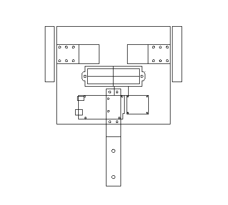
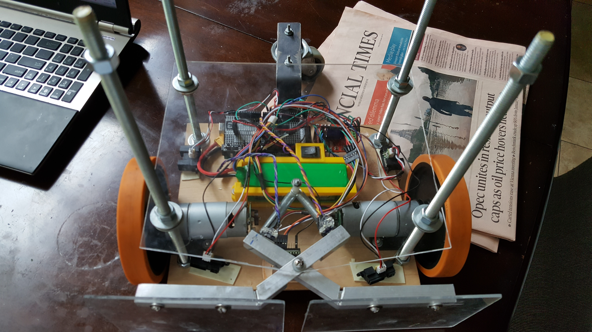
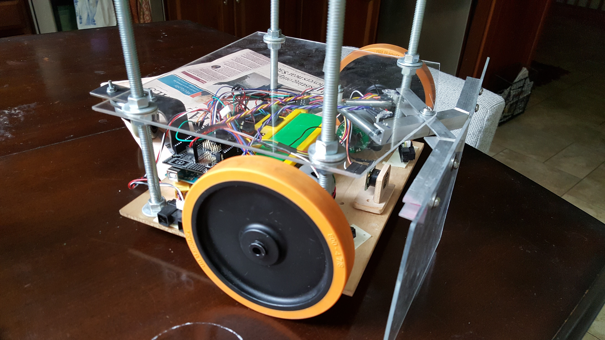
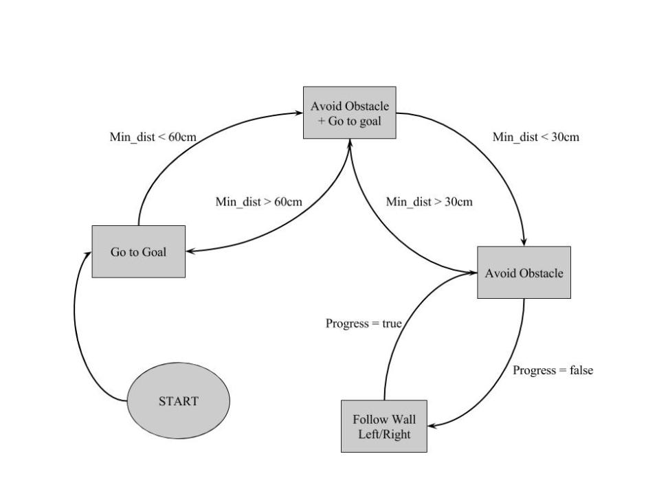

The robot is configured with two driven wheels and one free spinning wheel – this design greatly simplifies calculating the coordinate system, as the wheels turn without slippage. Moreover, the robot has zero turning radius allowing for simple navigation.
The robot features threaded rods which extend upwards, these were implemented in order to allow for additional modules. The robot also features a mechanical collision sensor to act as a safeguard against any obstacles which are not detected by the infrared distance sensors. This “bumper” covers the entire front face of the robot, and is mounted on two square tubes which pivot independently.
The battery case is 3D printed, and is mounted directly behind the motors in order to maximize the robot’s stability. Five distance sensors are mounted for navigation – two sensors face the robot’s sides in order to allow for wall following.
In order for the robot to navigate to a new location, it needs to be able to keep track its current coordinates, and control its heading. To do this, each motor is first controlled using a PID loop, with the velocity given quadrature encoders. Secondly, its relative position is iteratively calculated from the change in position given by the quadrature encoders. In order to control the robot, it’s linear velocity is fixed, while its rotational velocity is varied. The rotational velocity is controlled in a PID loop using the heading as a reference. With all these components, a navigation state machine can be implemented.
The implementation of the state diagram given in the figure is relatively straightforward. Each state is simply a different method for calculating the heading vector. The go to goal vector is simply the vector pointing from the robot’s current position to the final destination, and the avoid obstacle heading is the vectorial sum the obstacle distances. There is additionally a blended state between the two in order to ensure a smooth avoidance. The wall following vector uses a dot and cross product of the left or right side distance, and is implemented when the robot ceases to make progress towards the target location.